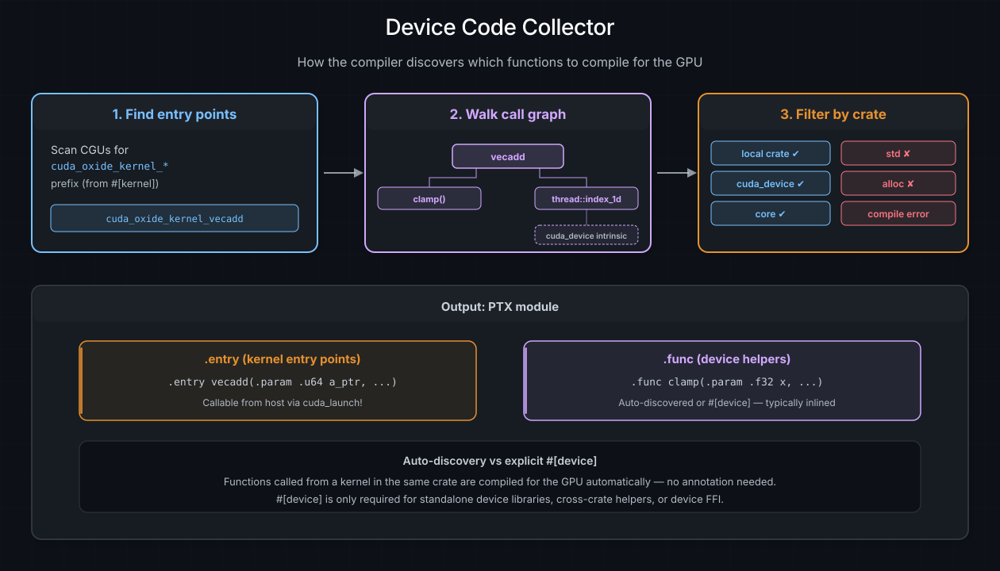

Kernels and Device Functions#
A kernel is a function that runs on the GPU – the entry point that the host launches across thousands of threads. A device function is a helper that runs on the GPU but can only be called from another device function or kernel, never from the host. This chapter covers both, along with the Rust patterns that are (and aren’t) supported in device code.
See also
CUDA Programming Guide – Kernels for the authoritative CUDA C++ reference on kernel and device functions.
#[kernel] – the GPU entry point#
Annotating a function with #[kernel] tells cuda-oxide to compile it as a GPU
entry point. The function must return () – kernels communicate results by
writing to output buffers, not by returning values.
use cuda_device::{DisjointSlice, kernel, thread};
#[kernel]
pub fn vecadd(a: &[f32], b: &[f32], mut c: DisjointSlice<f32>) {
let idx = thread::index_1d();
if let Some(c_elem) = c.get_mut(idx) {
*c_elem = a[idx.get()] + b[idx.get()];
}
}
Under the hood, #[kernel] does three things:
Renames the function into the reserved
cuda_oxide_kernel_<hash>_<name>namespace so the compiler’s collector can identify it as a device entry point. The exact prefix is owned by the workspace-internalreserved-oxide-symbolscrate; the<hash>suffix makes the namespace unguessable for user code.Adds
#[no_mangle]to preserve the symbol name in the generated PTX.Generates host lookup metadata so typed launch code can find the correct PTX entry. Generic kernels also get a readable helper such as
scale_ptx_name::<f32>(); generated marker types are internal plumbing.
In the generated PTX, a kernel becomes a .entry directive – the GPU
equivalent of main:
.entry vecadd(.param .u64 a, .param .u64 a_len, ...) { ... }
Parameter constraints#
Kernel parameters cross the host/device ABI boundary through argument scalarization (covered in the Memory and Data Movement chapter). The key rules:
Slices (
&[T],DisjointSlice<T>) become a pointer + length pair.Scalars (
u32,f32, etc.) are passed directly.Structs and closures by value travel as a single byval
.param. The field-by-field flattening still applies to internal device-to-device calls, but the kernel boundary itself receives the whole aggregate as one value to match the single packet slot the host launcher pushes.No heap-allocated types (
Vec,String,Box) – thealloccrate is allowed through the compiler, but no device-side#[global_allocator]is configured today. Even with one, devicemallocis extremely slow.
Grid-constant parameters#
Use #[grid_constant] on an immutable reference when the kernel needs the
address of a read-only value supplied at launch:
#[repr(C, align(64))]
#[derive(Clone, Copy)]
struct Descriptor { bytes: [u8; 128] }
#[cuda_module]
mod kernels {
use super::*;
#[kernel]
pub fn consume(#[grid_constant] descriptor: &Descriptor) {
// Pass descriptor's address to a device helper or a TMA operation.
}
}
The generated host launcher accepts Descriptor by value. The driver copies
its 128 bytes into kernel parameter storage, and each device thread borrows
that same storage for the duration of the launch:
host Descriptor -> one by-value launch argument -> shared read-only device &Descriptor
Taking the address does not create a private descriptor copy for each thread.
This is useful for TMA tensor maps: the descriptor can travel with the launch
instead of requiring a separate device allocation and upload. It does not
promise a particular speedup; measure the kernel and launch workload that
matter to your application. The existing tma_copy example demonstrates this
with a real tensor map.
The pointee must be sized, nonzero in size, and have no interior mutability
(UnsafeCell, including Cell and atomics, is rejected). Its outer reference
must have an elided lifetime or '_; a named or 'static lifetime cannot
describe storage that expires when the launch finishes. Do not modify any
part of the parameter or use its address after that launch. Pointers stored
inside a descriptor still need to refer to memory accessible to the GPU.
The generated typed launcher also requires the value to be Copy, as for
other by-value kernel arguments. Normal by-value layout restrictions still
apply. Values containing device shared-memory pointers are rejected because
those pointers have different storage widths across the supported backends;
ordinary generic or global pointers do not have that restriction.
Generated host launch methods for grid-constant parameters are always
unsafe, including prepared and async methods, even when the device kernel
is a safe function. Copy and read-only parameter storage do not prove that
references or pointers stored inside the value are valid on the GPU. At
launch, the caller must ensure that any allocations the kernel accesses are
device-accessible, correctly aligned and initialized, live until GPU work
completes, and satisfy Rust’s aliasing and synchronization rules. A prepared
launch checks geometry and resources; it does not prove these memory
properties. This requirement also applies to payloads containing only data;
the current type bound does not distinguish them from pointer-bearing values.
When using a manual unsafe launch, supply the entire pointee value as one argument, with its Rust size and alignment. Passing an eight-byte device pointer to this parameter does not match its ABI. An ordinary unannotated pointer parameter keeps the existing pointer ABI; use that for descriptors that reside in global memory or need to be updated there. Grid-constant parameters require compute capability 7.0 or newer. Both the LLVM NVPTX and libNVVM paths preserve their by-value size and alignment.
Device helper functions#
Not all GPU code belongs in the kernel itself. You can factor logic into helper functions that the compiler will also compile for the GPU.
Auto-discovered helpers#
The simplest approach: just write a normal Rust function and call it from your
kernel. The compiler’s collector traverses the call graph from each
#[kernel] entry point and automatically compiles every reachable function for
the GPU – no annotation needed:
fn clamp(x: f32, lo: f32, hi: f32) -> f32 {
if x < lo { lo } else if x > hi { hi } else { x }
}
#[kernel]
pub fn apply_clamp(input: &[f32], mut out: DisjointSlice<f32>) {
let idx = thread::index_1d();
if let Some(out_elem) = out.get_mut(idx) {
*out_elem = clamp(input[idx.get()], 0.0, 1.0);
}
}
The clamp function is compiled to a PTX .func (device function) and
typically inlined by the compiler, so there is no call overhead.
When #[device] is needed#
The #[device] attribute is required in three specific scenarios where
auto-discovery is not sufficient:
Scenario |
Why |
|---|---|
Standalone device libraries |
No |
Cross-crate device functions |
The function is in a different crate from the kernel |
Device FFI |
The function is exposed as |
use cuda_device::device;
#[device]
pub fn magnitude(x: f32, y: f32) -> f32 {
(x * x + y * y).sqrt()
}
#[kernel] vs #[device]#
Feature |
|
|
Auto-discovered |
|---|---|---|---|
PTX directive |
|
|
|
Launchable from host |
Yes, via typed module |
No |
No |
Can return a value |
No (must be |
Yes |
Yes |
Callable from device code |
Yes |
Yes |
Yes |
Annotation required |
Always |
Only for standalone/cross-crate/FFI |
Never |
What Rust works on the GPU#
cuda-oxide compiles standard Rust through rustc – it is not a subset
language. That said, GPU code runs in a no_std environment without a
device-side heap allocator configured, so certain Rust features are
unavailable today. Here is the current support matrix:
Supported#
Feature |
Notes |
|---|---|
Primitive types ( |
Full support |
Structs and tuples |
Decomposed at ABI boundary |
Enums ( |
Including |
|
Multi-way branching |
|
Range-based and iterator-based |
Iterators ( |
Desugared through MIR |
|
Inside loops |
Arrays ( |
Read, write, indexing |
Slices ( |
Read-only; mutable writes via |
Closures (within device code) |
Normal Rust semantics |
Generic functions |
Monomorphized per call site |
|
For advanced patterns |
Not supported#
Feature |
Reason |
Alternative |
|---|---|---|
|
Require heap allocator (no device-side |
Use fixed-size arrays or slices |
|
Require formatting machinery + I/O |
Use |
|
No OS on GPU |
Communicate via buffers |
Trait objects ( |
Require vtable dispatch |
Use generics (monomorphized) |
Tip
If you accidentally use an unsupported feature, the compiler will produce a
clear error: "CUDA-OXIDE: FORBIDDEN CRATE IN DEVICE CODE" with a list of
allowed crates (core, alloc, cuda_device, and your local crate).
Conditional compilation#
#[cfg(...)] works in device code exactly as it does anywhere else in Rust.
What is missing is anything to gate on: the compiler supplies no
target-derived cfg, so a kernel has no way to ask which architecture it is
being compiled for. Arch requirements live in doc comments and are enforced by
the caller, which is why an example that needs redux.sync checks
ctx.compute_capability() on the host and skips rather than specializing the
kernel.
--device-cfg NAME is how you supply one yourself. It is repeatable, and each
occurrence becomes a --cfg NAME in the build’s rustflags:
# From the crate directory, not with an example name -- see below.
cargo oxide build --device-cfg ampere_up
// One instruction where the target allows it, a shuffle tree everywhere else.
#[cfg(ampere_up)]
let total = warp::redux_sync_add(u32::MAX, value);
#[cfg(not(ampere_up))]
let total = {
let mut acc = value;
let mut offset = 16;
while offset > 0 {
acc = acc.wrapping_add(warp::shuffle_xor(acc, offset));
offset /= 2;
}
acc
};
Four things are worth knowing before reaching for it.
It is not limited to device code. The flag travels as a rustflag, so every
crate cargo compiles for that build sees the cfg, host code included.
It switches build into passthrough mode. Passing it means build no
longer takes an example name, so
cargo oxide build my_example --device-cfg ampere_up is rejected; run it from
the crate’s own directory instead. (test is passthrough already, flag or no
flag.) If the gate can live in the crate’s manifest, an ordinary Cargo feature
(#[cfg(feature = "ampere_up")]) does the same job without giving up
example-name invocations; --device-cfg earns its keep when you need a cfg
injected without touching any Cargo.toml.
rustc warns about an undeclared cfg name. The unexpected_cfgs lint
checks every #[cfg(...)] against the declared set, and an injected
--cfg ampere_up is not in it, so each use prints an
unexpected cfg condition name warning. Declare it in the kernel crate’s
manifest to silence them:
[lints.rust]
unexpected_cfgs = { level = "warn", check-cfg = ["cfg(ampere_up)"] }
Nothing ties it to --arch. If the cfg name stands for an architecture,
you are the one keeping the two in step – passing --device-cfg ampere_up
without the matching --arch will happily build the specialized path for
whatever target was selected, and PTX that the assembler then rejects.
Loop unrolling#
Inside a #[kernel] or #[device] function, put #[unroll] directly on a
loop whose trip count is known at compile time. This requests that the compiler
remove the loop and lay out copies of its body:
#[kernel]
pub fn sum_four(mut out: DisjointSlice<u32>) {
let tid = thread::index_1d();
if let Some(out_elem) = out.get_mut(tid) {
let mut sum = 0;
let mut i = 0;
#[unroll]
while i < 4 {
sum += i;
i += 1;
}
*out_elem = sum;
}
}
The pass currently recognizes explicit counted while loops. Range-based
for loops are not yet recognized.
Use #[unroll(N)], where N >= 2, when the trip count is only known at runtime.
The loop then does N iterations’ work per trip. A small remainder loop handles
any leftover iterations, so n does not have to be divisible by N:
let mut i = 0;
#[unroll(4)]
while i < n {
process(i);
i += 1;
}
An annotated loop may contain other loops. Only the loop carrying the annotation is unrolled; each inner loop is copied intact and remains a loop. Add a separate annotation to an inner loop if you want to unroll it too.
Loops with several continue paths are supported. Full #[unroll] also
preserves break paths and loops with more than one exit target.
Partial #[unroll(N)] currently requires the loop condition to be the only
exit. If the loop has a break or another exit, the compiler warns and does not
unroll that loop.
Partial unrolling also requires a counted-up loop: the counter must have a
positive step, use < or <=, and compare against a limit that does not change
inside the loop. The compiler warns and does not unroll unsupported requests.
To keep generated code bounded, one annotation may create at most 1,024 body copies, 8,192 cloned basic blocks, and 65,536 cloned operations. A larger request warns and is not unrolled. Full variable-debug builds also skip unrolling because they keep loop variables in memory instead of SSA form.
Unrolling trades larger generated code for fewer branches and more optimization opportunities. Use it for small or performance-critical loops, and measure the result.
See also
For how the compiler analyzes and rewrites annotated loops, including the stage-index peephole, see Compiler Optimizations.
#[launch_bounds] – occupancy hints#
The #[launch_bounds] attribute tells the compiler how many threads you intend
to launch per block. This lets the PTX assembler make better register allocation
decisions and can improve occupancy:
#[kernel]
#[launch_bounds(256, 2)]
pub fn optimized_kernel(mut out: DisjointSlice<f32>) {
// ...
}
Parameter |
Required |
PTX directive |
Description |
|---|---|---|---|
|
Yes |
|
Maximum threads per block |
|
No |
|
Minimum concurrent blocks per SM |
The generated PTX includes these directives:
.entry optimized_kernel .maxntid 256, 1, 1 .minnctapersm 2 { ... }
.maxntid bounds the product x * y * z, so a 256-thread bound admits
(256, 1, 1), (16, 16, 1) and (4, 8, 8) alike. Add
#[launch_contract(block = (x, y, z))] when one exact shape is required. That
emits .reqntid in place of .maxntid, which the driver enforces per axis:
.entry exact_kernel .reqntid 256, 1, 1 .minnctapersm 2 { ... }
The two directives are mutually exclusive; ptxas rejects an entry declaring
both, so a contracted kernel emits .reqntid alone. .minnctapersm is an
occupancy hint and composes with either.
Tip
#[launch_bounds] must appear after #[kernel]:
#[kernel]
#[launch_bounds(256, 2)] // correct
pub fn my_kernel(...) { }
When the bound forces spills#
A launch bound is ultimately a cap on registers per thread: promising ptxas more resident threads leaves each of them fewer registers to work with. If the kernel needs more than the cap allows, ptxas does not fail – it spills the excess to local memory, and the occupancy the bound bought is then paid for again on every access to a spilled value.
That is easy to miss, because the build succeeds. cuda-oxide warns instead, at the kernel’s definition span:
warning: kernel `cuda_oxide_kernel_a1b2c3d4_my_kernel` compiled with
`#[launch_bounds(256, 2)]` and spills registers
= note: ptxas reports 96 bytes spill stores and 96 bytes spill loads
= note: ptxas allocated 40 registers per thread
= help: relax `min_blocks_per_sm` or reduce register pressure
(Byte counts and register totals are whatever ptxas reported for your kernel.)
Only kernels carrying #[launch_bounds] are checked – without a bound there is
no promise for ptxas to satisfy at the expense of registers. The warning can
only fire in builds that materialize a native cubin (--materialize-cubin, or
any build that embeds a cubin): a plain PTX build never runs ptxas, so there is
no resource report to inspect.
The usual responses are to raise max_threads, drop or relax min_blocks, or
cut register pressure in the kernel itself. Spilling is not automatically wrong:
a kernel can be faster spilling a little at high occupancy than not spilling at
low occupancy. The warning exists because that is a trade worth making
deliberately rather than by accident.
Warning
#[allow(...)] does not silence these. They are raw span diagnostics rather
than lints, so the suppression attribute does not apply to them. The escape
hatch is an environment variable, meant for builds that measured the spill and
accepted it:
CUDA_OXIDE_NO_SPILL_WARN=1 cargo oxide build my_kernels --materialize-cubin
The collector – how device code is discovered#
When you build with cargo oxide, the rustc-codegen-cuda backend runs a
collector pass that determines which functions to compile for the GPU:
Scan all compilation units for functions in the reserved
cuda_oxide_kernel_<hash>_namespace (generated by#[kernel]).For each kernel, traverse the call graph and collect all transitively reachable functions.
Filter each callee against the allowed-crate list:
Crate |
Allowed |
Why |
|---|---|---|
Your local crate |
Yes |
Your kernel and helper code |
|
Yes |
GPU intrinsics (threads, warps, shared memory) |
|
Yes |
|
|
No |
Requires OS facilities not available on GPU |
|
Allowed |
Passes the collector, but no device-side allocator is wired up yet. Link-time error today. |
If the collector encounters a call into a forbidden crate, it reports a compile-time error rather than generating broken PTX.


The device code collector: starting from #[kernel] entry points, the compiler walks the call graph to discover all reachable device functions, then filters each callee against the allowed-crate list (local crate, cuda_device, core). The output is a PTX module with .entry and .func directives.#
no_std and panic behavior#
Device code runs in an implicit #![no_std] environment. You do not need to add
this attribute yourself – the compiler backend handles it.
Panic behavior: all unwind paths in MIR are treated as unreachable. If a
panic actually triggers at runtime (e.g., an array bounds check fails), the GPU
executes a trap instruction, which causes the host to receive
CUDA_ERROR_ILLEGAL_INSTRUCTION. This is semantically equivalent to
panic=abort but does not require any special compiler flags.
In practice this means:
unwrap()andexpect()work but will trap the GPU onNone/Err.assert!anddebug_assert!work but trap on failure.panic!("message")compiles, and so doespanic!("{}", value). The panic path lowers to a trap and the message is discarded: there is no panic runtime to print it, and the statements that would have built it are dead once the call is dropped. Reach forgpu_printf!before the check when you need to see the values, orgpu_assert!for an explicit check.
See also
The Error Handling and Debugging chapter
covers gpu_printf!, gpu_assert!, and cargo oxide debug for diagnosing
kernel failures.